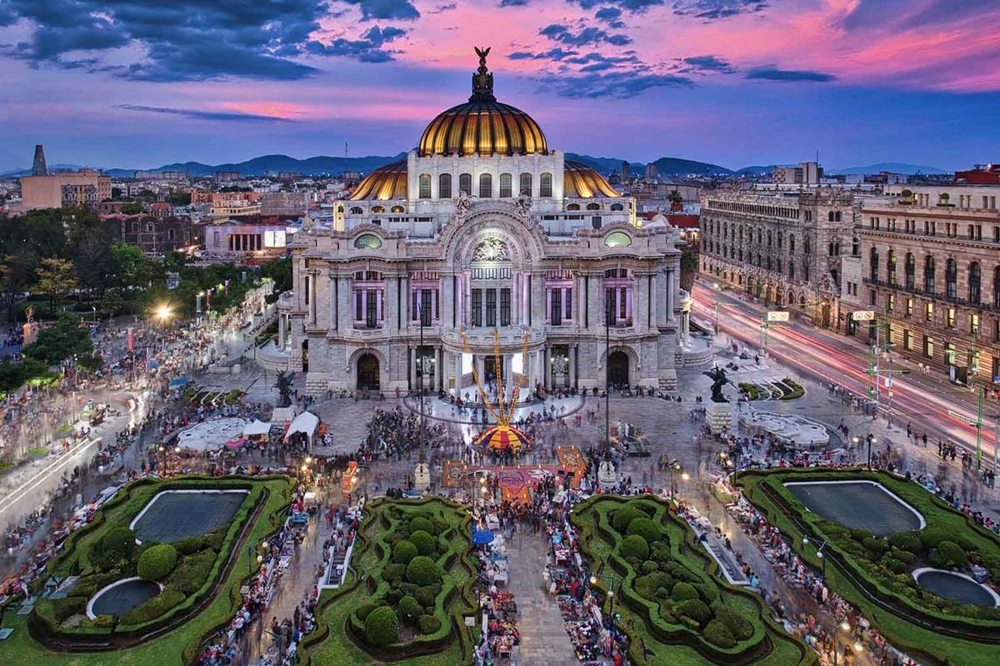
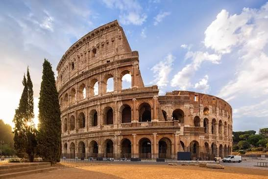
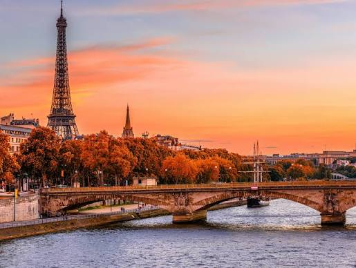
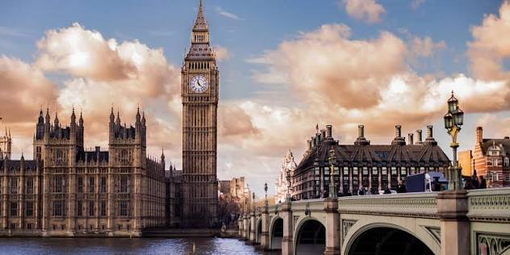

1. Tokyo

Kyoto is famous for its numerous classical Buddhist temples, gardens, imperial palaces, Shinto shrines, and traditional wooden houses.
- Province/State: Kyoto Prefecture
- Country: Japan
- Population: ~1.46 Million
- Latitude & Longitude: 35.0116° N, 135.7681° E
- Flag:
2. CDMX

Mexico City is a culturally rich metropolis known for its ancient archaeological sites, stunning colonial architecture, and world-renowned gastronomy.
- Province/State: Mexico City (CDMX)
- Country: Mexico
- Population: ~9.2 Million
- Latitude & Longitude: 19.4326° N, 99.1332° W
- Flag:

3. Roma

Rome is a historic city known as the Eternal City, filled with ancient ruins like the Colosseum, Renaissance landmarks, and rich cultural heritage.
- Province/State: Lazio
- Country: Italy
- Population: ~2.8 Million
- Latitude & Longitude: 41.9028° N, 12.4964° E
- Flag:
4. Paris

Paris is a global center for art, fashion, gastronomy, and culture. It is world-famous for landmarks like the Eiffel Tower and iconic art museums.
- Province/State: Île-de-France
- Country: France
- Population: ~2.1 Million
- Latitude & Longitude: 48.8566° N, 2.3522° E
- Flag:

5. London

London is a vibrant global capital steeped in history, home to iconic landmarks such as the Tower of London, Big Ben, and Buckingham Palace.
- Province/State: Greater London
- Country: United Kingdom
- Population: ~8.9 Million
- Latitude & Longitude: 51.5074° N, 0.1278° W
- Flag: